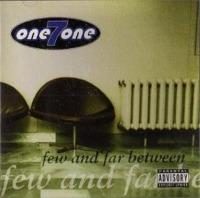
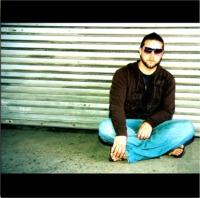

| yesteryear forever |
Music Projects
ONE7ONE was an energetic Columbus, Ohio rock band active in the early 2000s, featuring Kyle Hamm (vocals), Shannon Smith (lead guitar), Jeffrey Fisher (rhythm guitar, vocals), Franc Aledia and Sean Wise (bass), and Jeff Wise (drums). Known for their powerful live shows, they played major local venues including Alrosa Villa, Promowest Pavilion, Newport Music Hall, Victory’s, and Polaris Amphitheater. ONE7ONE shared the stage with national acts such as Fuel, Breaking Benjamin, and El Nino, and released a studio album in 2003 titled 'Few and Far Between', cementing their legacy in the Ohio rock scene.
Recorded at John Schwab Recording Studios in Columbus, Ohio
one7one - “Few and Far Between” - 2003
Recorded at The Recording Workshop in Chillicothe, Ohioone7one - "Unfinished Demo" - 2005
Recorded at Yellow House Recording in Columbus, Ohio
Jeffrey Fisher - “Dixie Cup Whiskey Memories” - 2007
Recorded in my living room and basement in Columbus, OhioJeffrey Fisher - "Unfinished Demo" - 2013
Videos
Learn about the making of this stop motion video here.
Shot this video on a cell phone while playing with my daughter :D
one7one "Drain Me" music video. Shot at a friend's house over ~2 days.
one7one "Decades" music video. Compilation of a few live shows.
one7one wtih Josie Scott from Saliva at Victory's.
one7one's last show at the Alrosa Villa in Columbus, Ohio.